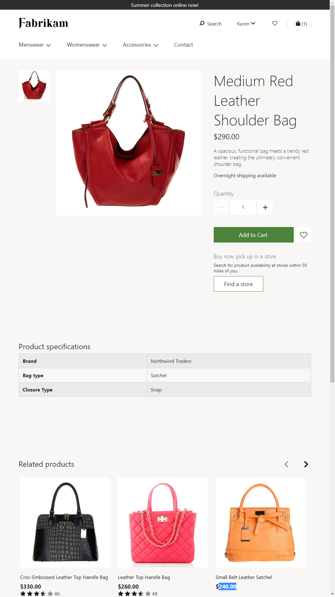

Übersicht der Produktdetailseiten
Important
Dynamics 365 Retail ist jetzt Dynamics 365 Commerce und bietet umfassende Handelsfunktionen für alle Kanäle – von E-Commerce über Shops bis hin zu Callcentern. Weitere Informationen zu diesen Änderungen finden Sie unter Microsoft Dynamics 365 Commerce.
Dieses Thema bietet eine Übersicht über Produktdetailseiten (PDPs) in Microsoft Dynamics 365 Commerce.
Übersicht
Eine PDP bietet detaillierte Informationen zu einem Produkt und ermöglicht es Kunden, Produktoptionen wie Größe, Stil und Farbe auszuwählen. Eine PDP sollte alle Produktinformationen enthalten, die ein Kunde benötigt, um eine Kaufentscheidung zu treffen.
Die folgende Abbildung zeigt ein Beispiel für eine PDP.

Kopf- und Fußzeilenmodule
Oben in der PDP befindet sich eine Kopfzeile mit allen Produktkategorien und anderen Seiten, die Kunden auf Wunsch des Einzelhändlers durchsuchen sollen. Unten in der Seite befindet sich eine Fußzeile mit Direktlinks zu verschiedenen Themen, die Kunden interessieren könnten.
Kauffeldmodul
Das wichtigste Modul auf einer PDP ist das Kauffeldmodul, das als erstes Element im Hauptabschnitt der Seite angezeigt wird. Ein Kauffeldmodul zeigt wichtige Produktinformationen wie den Produktnamen, die Produktbeschreibung, den Produktpreis, Produktbilder und Produktbewertungen an.
Mit dem Kauffeldmodul kann der Kunde Produktoptionen (z. B. Größe, Stil und Farbe) auswählen und das Produkt in den Einkaufskorb legen. Der Kunde kann das Produkt auch online kaufen und in einem Geschäft abholen. Das Modul Online kaufen und im Geschäft abholen verwendet die Integration mit Bing Maps-APIs (Application Programming Interfaces), um Geschäfte in der Nähe oder Geschäfte an einem anderen vom Kunden angegebenen Ort zu finden.
Ein Kauffeldmodul erfordert eine Produkt-ID. Diese ID wird aus dem Seitenkontext abgeleitet. Wenn einer Seite, deren Seitenkontext keine Produkt-ID enthält, ein Kauffeldmodul hinzugefügt wird, werden die Informationen nicht korrekt wiedergegeben.
Produktklassifizierungsmodul
Mit dem Produktklassifizierungsmodul können zusätzliche Details zum Produkt angezeigt werden. Diese Details werden aus den Produktattributen in Commerce übernommen. Das Produktklassifizierungsmodul zeigt jedes Attribut, bei dem die Eigenschaft sichtbar auf true gesetzt ist. Es erfordert eine Produkt-ID, um die Produktattribute abzurufen.
Empfehlungsmodul
Das Empfehlungsmodul ist ein wichtiges Modul auf einer PDP. Während Kunden nach Produkten suchen, sollten ihnen mehr Produktoptionen angeboten werden, damit sie das richtige Produkt finden und einen Kauf tätigen können. Mithilfe von Empfehlungen können Kunden auf einfache Weise verwandte Inhalte entdecken und weiter einkaufen.
Es gibt verschiedene Arten von Empfehlungslisten:
- Die Liste Personen gefällt auch basiert auf dem maschinellen Lernen. Sie verwendet die Transaktionshistorie anderer Kunden, um Empfehlungen abzugeben. Diese Liste wird vom Empfehlungsdienst erstellt und ähnelt den Listen „Kunden, die dies gekauft haben, kauften auch ...“. Eine Produkt-ID ist zum Generieren dieser Liste erforderlich.
- Die Liste Zugehörig kann für ein Produkt in Commerce konfiguriert werden. Beispielsweise können für eine braune Lederreisehandtasche mehrere Handtaschen auf Lederbasis oder für Reisezwecke entworfene Handtaschen für die Themenliste konfiguriert werden. Andere Typen zugehöriger Listen, wie Zubehör und Weitere ähnliche Aktivitäten, können auch in Commerce konfiguriert werden. Eine Produkt-ID ist zum Generieren dieser Liste erforderlich. Daher ist die Liste leer, wenn sie zu einer Startseite hinzugefügt wird, auf der der Seitenkontext keine Produkt-ID enthält.
- Algorithmisch generierte Empfehlungslisten, wie Populär, Bestseller und Neu können in PDPs verwendet werden. Diese Listen stehen zwar möglicherweise nicht in direktem Zusammenhang mit dem Produkt auf der PDP, sind jedoch eine weitere Möglichkeit, Kunden bei der Suche nach Produkten zu unterstützen, die sie interessieren könnten. Diese Listentypen erfordern keine Produkt-ID. Hierbei handelt es sich um generische Listen, die auf der Grundlage von Einkaufsmustern auf der gesamten Website erstellt werden.
- Redaktionslisten sind manuell kuratierte Listen. Beispielsweise kann ein Einzelhändler entscheiden, Listen von Produkten, die präsentiert werden sollen, manuell zu kuratieren.
Bewertungs- und Prüfungsmodule
Mit drei Modulen können Prüfungen angezeigt und hinzugefügt werden:
- Prüfungen – Dieses Modul zeigt Bewertungen und Prüfungen an, die von anderen Kunden bereitgestellt wurden. Kunden können die Prüfungen sortieren und filtern. Dieses Modul ermöglicht es auch Kunden, Prüfungen zuzustimmen oder abzulehnen und Probleme zu melden.
- Prüfung schreiben – Mit diesem Modul können Kunden ihre eigenen Produktprüfungen verfassen.
- Bewertungshistogramm – Dieses Modul enthält ein Histogramm, das den Bewertungstrend für ein Produkt anzeigt.
Weitere Details erhalten Sie unter Bewertungs- und Prüfungsüberblick.
Marketingmodule
Wenn Marketinginhalte für ein bestimmtes Produkt spezifisch sind, kann der PDP ein beliebiges Marketingmodul hinzugefügt werden. Sie können einer PDP Marketingmodule hinzufügen, indem Sie die Seite „anreichern“. Weitere Details finden Sie unter Erweitern einer Produktseite.
Zusätzliche Ressourcen
Übersicht der Einkaufswagen- und Auschecken-Seiten